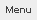
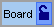
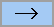
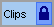
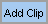
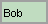
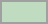

New User Introduction: (Very Important!)
top
The purpose of TouchBoard is to help people type text, without having to press keys on their keyboard or click their mouse. The text that is typed can be sent to any other application that you wish. The application that receives the text is called the "target application". For example, the target application could be a program like Notepad on Windows, TextEdit on a Mac, or a form in a web browser.
One important thing to understand, is that the target application needs to have "focus" in order to receive text. If you click on TouchBoard for any reason, for instance to use TouchBoards menu, then the target application will lose focus. Just click on the target application to give focus back to it. This will allow the target application to recieve text from TouchBoard once again.
To activate a TouchBoard key or other TouchBoard controls, just hover over the key that you desire to activate. Hovering means to move your mouse over something and then stop, holding your mouse still for at least a moment. You do not need to click your mouse or use your keyboard, just hovering over a TouchBoard key is all that is needed. Controlling this program is easy, but it may take a little getting used to.
Any key you hover over will activate once, and it will not activate again until you move your mouse to a different spot. To activate multiple keys, repeat this process. When you do not want to activate any keys, move your mouse away from TouchBoard. You could also minimize TouchBoard if you won't be needing it for a longer time.
To display a board and access its keys, hover over the boards name, or hover over the boards lock control. Hovering over a board name will display a board for a single key use. Locking a board with the boards lock control will display a board until you unlock it.
Hover over a key inside of a displayed board to activate it. The key will send the text that it contains to the target application. You can try activating some keys now. Click inside the practice area above. Hover over the lock control next to one of the sample boards, and hover over some of the boards keys. You should see text from your chosen keys appear in the practice area if this is done correctly.
TouchBoard allows you to easily add your own boards and keys, or change existing keys. You can customize many things about a key, including it's name, background color, and it's contents (what it will type). A key can hold large amounts of text in its contents, there is no limit. Inside a key's contents, you can optionally use command codes to do various things besides simply type text.
Benefits and Uses:
top
This program can benefit anyone who types. It is wonderful for helping you type faster and easier. It is also of great benefit to anyone who's wrists become sore from typing, or has any other difficulty with typing. TouchBoard can eliminate many keystrokes and mouse clicks, saving you lots of time, and also reducing physical wear on the tendons of the wrist.
Example uses:
- Memory aid: Use it to store login names, or other pieces of text that are difficult to remember.
- Repetitive text: Use it to store any text that is commonly repeated.
- Office or company environment: Use it to store the names of companies or individuals, and automate any commonly needed typing.
- Online purchases and forms: Use it to fill out your name, address, phone number, email address, and so forth on the internet. Fill out forms in seconds instead of minutes.
- Programmers: Use it to type any common programming constructs, such as empty if statements, empty for loops, and template classes or files. Store variable names that you are currently working with in the Clips board for easy repetition.
- People with disabilities: Use it to make it easier for you to type. Since this program does not require use of the keyboard or clicking of the mouse in order to enter text, it can be of great benefit to people who have difficulty doing either of those actions. Use it in conjunction with any device that allows a person to move the mouse pointer.
- Speech recognition supplement: Use it in conjunction with speech recognition software, to type text, symbols, words, and phrases that the speech recognition software does not easily recognize.
Controls Reference:
top
Title Bar:
You can drag the title bar to move the TouchBoard window around.
Close button:
Click the close button to exit the program.
Menu: 
Click on the menu to open boards, close boards, clean up the clips board, and perform various other actions. The contents of the menu are explained in the menu reference section of this help file.
Minimize Key:
Hover over the minimize key to minimize the application.
Caps Lock Key:
Hover over the Caps lock key to turn on and off Caps lock for TouchBoard. Note that this Caps lock key is for TouchBoard only, and does not affect the Caps lock state of your physical keyboard. When Caps lock is on , everything typed by TouchBoard will be in ALL CAPS. When Caps lock is off , everything typed by TouchBoard will be as it appears in the contents of the activated key. If a key command turns on or off Caps lock, or if the shift command is used, this control will indicate that.
Edit Key:
Use the edit key to edit open boards or board keys. To edit a board, hover over the edit key, and then hover over the name of the board that you wish to edit. To edit a key, hover over the edit key, and then hover over the key that you wish to edit. The edit key will change from to when you hover over it to indicate that the next thing you hover over will be edited instead of activated. For more information go to the Key Editing section.
Boards: 
If you hover over a boards name, the board will be displayed. The board name will only display the board until you use a single key. Once you use that key, the board will disappear. If you wish for the board to remain displayed indefinitely, use the lock control  to keep the board open.
to keep the board open.
Locked board key:
This key is displayed when a board is locked open. A locked board will remain displayed until you unlock it or close it. To unlock a board, hover over the locked board key.
Unlocked board key:
This key is displayed when a board is unlocked. An unlocked board will not be displayed, unless you lock it, or hover over that boards name. To lock a board, hover over the unlocked board key. A locked board will remain displayed until you unlock it or close it.
Hide all arrow: 
If you hover over this arrow, all the boards will be hidden. They will also the become unlocked if they were locked.
Clips board: 
The Clips board is a special board for temporarily holding pieces of text that are being reused often, but will not be needed when you are finished working. For example, lets say that you are writing a manual that has the phrase "Give it a try!" used in many places. Instead of creating a custom key to type that phrase, you can type it once in to your word processor, highlight it, then hover over the Add Clip key. A new key will be created for you at the top of the Clips board that will type "Give it a try!" any time you hover over it. If you needed to, the keys created in the Clips board can be edited the same way as any other key, allowing you to change the keys title, contents, etc. For more information go to the Clips section of the Menu Reference.
Add Clip key: 
Use this key to add new clips to the clips board. First select the desired text in your target application, and then hover over the Add Clip key. A new clip key with your text will be created, and added to the top of the Clips board.
Key: 
To type the contents of a key in to your target application, click on your target application if needed, and then hover the key you wish to activate. To activate the same key more than once, hover over different spots on that key once for each disired activation. To activate multiple keys in a row, hover over each key in turn.
Empty Key: 
Empty keys will do nothing until you put something in them. To put something in them, edit them using the Edit key . Alternatively, you may quickly add a new key to the Clips board by using the Add Clip key .
Editing Boards:
top
To edit a board, hover over the edit key, then hover over the name of the board you wish to edit. You may also use the menu to select from a list of open boards to edit. When you do this, a dialog will appear allowing you to change any of the following items.
Board Name
This is the name of the board.
Columns
This is how many columns of keys the board will contain.
Board Border Color
This is the color of the thin border that surrounds all the keys on a board.
New Keys Background
This is the default background color for any newly created keys. This does not effect any keys that are already on the board.
New Keys Text Color
This is the default color of the text on any newly created keys. This does not effect any keys that are already on the board.
Reset All Keys To These Colors
If this is checked when the OK Button is pressed, all of the keys on the board will have their colors changed to the New Keys Background, and New Keys Text Color.
Auto Size Keys
When this is checked, all the keys on the board will automatically change their width so that key titles are always readable. If this is unchecked you will be able to change the width of the keys yourself.
Key Width
This allows you to specify how wide the keys are. You will be able to do see and change this setting only if Auto Size Keys is unchecked.
Example Key Reset Button
This will reset any changes you have made to New Keys Background and New Keys Text Color back to the program defaults.
Clear All Keys
If this is checked when you click on the OK button, all the keys on this board will be erased. This cannot be undone.
Copy All Keys From Other Board
This check box will pull up a list of other boards. When you choose a board from this list, and press the OK button, all of the keys on the board you are editing will be deleted and replaced with the keys from the chosen board. This cannot be undone. All keys copied from the chosen board will match the colors displayed in the example key. If you would like the colors of the copied keys to remain unchanged, check the Preserve Key Colors From The Other Board check box before you click the OK button.
Editing Keys:
To edit a key, hover over the edit key, and then hover over the key that you wish to edit. When you do this, a dialog will appear allowing you to change any of the following items.
Key Title
This is the title of the key.
Columns Wide
This is how many columns a key will take up. Use this to make a key larger than the keys around it. When this is set higher than 1, the key will grow to the right, taking up more columns, and covering any keys that it crosses over. The keys that get covered will not be deleted or harmed in any way, but you will be unable to activate them while they are hidden behind another key.
Key Background
This is the background color for the key.
Key Text Color
This is the color of the text displayed on the key.
Example Key Reset Button
This will reset the colors for this key to the New Keys Background and New Keys Text Color for the board that this key belongs to.
Contents
This is what the key will type when activated. Any amount of text can be stored in a keys contents. You can also optionally use command codes inside a key's contents to do various things besides simply type text.
Copy Key
This will store a copy of the key as it appears in the Edit Key dialog for pasting to a new location at a later time. This is useful for moving keys. To move a key, follow this procedure: Click the Copy Key button, and click OK or Cancel. Next, edit the key at your chosen destination, and hit the paste button. Changes become permanent when you click OK.
Paste Key
When you click the Paste Key button, everything you see in the Edit Key dialog will be replaced with the key that was copied beforehand. These changes become permanent when you press the OK button.
Clear Key
This will erase the key and set all the key fields to their default settings. These changes become permanent when you press the OK button
Copy Row
To copy a row of keys, hover over the edit key, and then hover over any key in the row that you wish to copy. When you press the Copy Row button, the entire row, including the key currently being displayed for editing, will be stored for pasting to a new row at a later time.
Paste Row
To paste a row of keys, hover over the edit key, and then hover over any key in the row that you wish to paste to. When you press the Paste Row button, the entire row, including the key currently being displayed for editing, will be replaced by the row that was copied beforehand. These changes become permanent when you press the OK button.
Copy Column
To copy a column of keys, hover over the edit key, and then hover over any key in the column that you wish to copy. When you press the Copy Column button, the entire column, including the key currently being displayed for editing, will be stored for pasting to a new column at a later time.
Paste Column
To paste a column of keys, hover over the edit key, and then hover over any key in the column that you wish to paste to. When you press the Paste Column button, the entire column, including the key currently being displayed for editing, will be replaced by the column that was copied beforehand. These changes become permanent when you press the OK button.
Menu Reference:
top
Menu > Board > New:
Create a new board file.
Menu > Board > Open:
Open an existing board file.
Menu > Board > Edit:
Edit an open board file.
Menu > Board > Reorder:
Reorder the open board files.
Menu > Board > Close:
Close and save an open board file.
Menu > Board > Close All:
Close and save all open board files.
Menu > Board > Set Default Boards:
Set the currently open boards as the default boards. The default boards are opened every time the program starts.
Menu > Clips > Clear and Reset clips board:
This will clear the clips board keys. This will also reset the clips board to its original settings, and recreate the clips board file, overriding any changes that have been made to it.
Menu > Clips > Sort by usage frequency:
This will sort the clips board by how many times each key has been used. More often used keys will go towards the top.
Menu > Options > Default Typing Speed:
This allows you to set how fast you would like TouchBoard to type. When this is set to Full Speed, TouchBoard will type as fast as it can. If you feel this is too fast for any reason, you can change the typing speed for the whole program to 30 characters per second, 15 characters per second, and 5 characters per second.
Menu > Exit:
Exit the program.
Menu > Help & Intro:
Open the help file.
Menu > About:
Display some information about this program.
Command Codes Reference:
top
Command codes can be typed into the contents of a key. Different command codes can make a key perform different actions. Commands allow you to make a key do more than just type text.
Basic command syntax:
Your commands will only work if you use the correct syntax, as follows:
1. Command code processing is turned off by default. To turn on command processing, type [parse] into every key that contains commands. The [parse] command does not have to be at the beginning of the contents, it can be anywhere inside of the contents. It can even be located after other commands, or at the end of the contents, if desired.
2. Spaces are not allowed in command codes. If you think you need a space inside a command code, use an underscore_ instead.
3. Command codes are always surrounded by square brackets. Remember, no spaces are allowed inside the brackets.
4. You may have as many commands in a keys contents as you wish.
5. Only certain commands exist to choose from. Undefined or misspelled command codes will generate an error.
6. Command codes are limited to 100 characters.
7. Command codes are case insensitive unless otherwise specified. Capitalize at will.
8. If a command ends in "x", you may type in a number to indicate how many repetitions of that command that you wish to have performed.
[parse]
Use this to turn on command processing for every key that contains commands.
[leftbracket]
Types a left bracket "[".
[rightbracket]
Types a right bracket "]".
[up.x],
[down.x], [left.x], [right.x].
Press the up, down, left, or right arrow. Replace "x" with the number of times that you wish to have that key pressed.
Examples:
[down.1], press the down arrow one time.
[right.30], Press the right arrow 30 times.
[backspace.x]
Press the backspace key the specified number of times.
See also: [up.x] to learn what x means.
[delete.x]
Press the delete key the specified number of times.
See also: [up.x] to learn what x means.
[camelcase_that]
This will copy any selected text into the clipboard, convert the text to camel case, and then paste the converted text over the existing selection. Camel case text looks like this: thisIsCamelCase.
Any white space characters are removed. Any dot characters ('.') are treated as the beginning of a new camel case phrase. This command may be useful to computer programmers, because variable names are often typed in camel case.
[capslock_on]
This will turn on caps lock for TouchBoard. Caps lock will remain turned on for all keys until it is turned off. Caps lock causes all text to be typed in uppercase. The Caps Lock Key will indicate when caps lock is on or off for TouchBoard.
See also: Caps Lock Key
[capslock_off]
This will turn off caps lock for TouchBoard.
See [capslock_on] for an explanation of what capslock does.
[capslock_toggle]
This will turn on caps lock if it is off, and it will turn it off if it is on.
See [capslock_on] for an explanation of what capslock does.
[shift]
This will change the next letter to uppercase. It has the same effect as [capslock_on], but for one letter only. If you use the shift command in a TouchBoard key without any text following it, TouchBoard will wait until more text is typed from some other key, and capitalize the first letter it encounters. What this means is that the letter that is capitalized can optionally be in a different TouchBoard key than the shift command. The shift command ignores tab, space, and return characters. The Caps Lock Key will indicate when the shift command is in effect.
Example:
[shift]hello
This results in "Hello".
[addclip]
This will add a new clip to the top of the clips board.
See also: Add Clip Key
[pause.x]
This will pause key content execution for the specified amount of time. Time is specified in tenths of a second. The maximum length of a single pause is 10 seconds. The maximum total for all pause commands in a single key is 60 seconds.
Pause amounts over the 60 second limit are ignored.
Examples:
[pause.17] will pause for 1.7 seconds.
[pause.100] will pause for 10 seconds.
[type_full_speed]
Touchboard has a typing speed setting, and this speed can be changed. This command sets the typing speed to the fastest possible speed. The typing speed set by this command can only affect the speed for the current TouchBoard key. The typing speed will change back to the default typing speed for the program when this TouchBoard key is finished. The default typing speed for the program can be set under Menu > Options > Default Typing Speed.
[type_slow],
[type_slower], [type_slowest].
Touchboard has a typing speed setting, and this speed can be changed. These commands slow down the typing speed. Specifically, [type_slow] will type at 30 characters per second, [type_slower] will type at 15 characters per second, and [type_slowest] will type at 5 characters per second. The typing speed set by these commands can only affect the speed for the current TouchBoard key. The speed will change back to the default typing speed for the program when this TouchBoard key is finished. The default typing speed for the program can be set under Menu > Options > Default Typing Speed.
Note: These commands slow down typing by creating a small pause between every keystroke. The maximum total pause time inside a single TouchBoard key is 60 seconds. The pauses created by these commands count towards that limit, and cannot exceed it. If the total amount of pause time reaches 60 seconds, any remaining text will be typed at full speed.
[press.key.key]
Use this command to press and release a single key, or a series of keys. You may use as many key codes as you want in this command, separated by periods, as long as the total length of the command inside the brackets remains no more than 100 characters. Key codes correspond to physical keys on your keyboard, not specific characters. Click here for a list of valid key codes. Each key listed is released before the next one is pressed, so this is not the correct command to use for nested key combinations like "control.c".
Examples:
[press.F4]
Press and release the F4 key.
[press.page_up.right.back_space.a]
Press and release the page up key, and then press and release the right arrow, and then press and release the back space key, and then press and release the letter 'A' key.
[press_combination.key.key]
Use this command to create nested key combinations. Each key listed will be pressed and held in the listed order, and then released in the reverse of that order. You may use as many key codes as you want in this command, separated by periods, as long as the total length of the command inside the brackets remains no more than 100 characters. Key codes correspond to physical keys on your keyboard, not specific characters. Click here for a list of valid key codes.
Examples:
[press_combination.control.c]
Press and hold the control key, press and hold the letter 'C' key, release the letter 'C' key, release the control key. This combination copies text to the clipboard on Windows.
[press_combination.shift.1]
Press and hold the shift key, press and hold the number 1 key, release the number 1 key, release the shift key. This combination will type an exclamation point.
[press_combination.control.shift.escape]
Press and hold the control key, press and hold the shift key, press and hold the escape key, release the escape key, release the shift key, release the control key. This combination pulls up the task manager on Windows.
[hold.onekey]
This will press and hold a single key. The specified key will be held down until you release that key with the release command. The key will also be released if needed when the current TouchBoard key contents is done executing. Keys are not held down between separate TouchBoard key activations. Key codes correspond to physical keys on your keyboard, not specific characters. Click here for a list of valid key codes.
Note: Most things that can be done with the hold and release commands can be done with other commands in a better way. It is recommended that hold and release only be used as a last resort, when no other commands are suitable.
Examples:
[hold.shift]Hello world![release.shift]
Produces the same effect as:
[capslock_on]Hello world![capslock_off]
This would type in all caps "HELLO WORLD!"
[hold.control][hold.shift][press.escape][release.shift][release.control]
Produces the same effect as:
[press_combination.control.shift.escape]
This combination pulls up the task manager on Windows.
[hold.control]c[release.control]
Produces the same effect as:
[press_combination.control.c]
This will copy items to the Windows clipboard.
[release.onekey]
This will release a single key that was previously held down with the hold command.
Click here for a list of valid key codes.
See the hold command for more details.
[date_time_stamp.format],
[date_time_stamp_lowercase.format].
These commands will generate a date and time stamp. The date and time will be taken from the computer's clock.
Text case:
[date_time_stamp_lowercase] will type the date time stamp in all lowercase.
[date_time_stamp] will type the date time stamp in mixed case.
If you desire a date time stamp in all caps, it can be achieved with the following sequence of commands:
[capslock_on][date_time_stamp.format][capslock_off]
Format pattern:
Replace "format" with a date time stamp pattern. See the date time stamp patterns section for more details.
Examples:
[date_time_stamp.dMMMyy_ha]
Would result in "4Jul01 5p" if the computer clock was set to the Fourth of July on 2001 at 5pm.
[uppercase_first_letter]
This will convert the first letter character of the selected string to uppercase.
All other characters in the string will remain unchanged, including any non-letter characters that occur
before the first letter. The effect of this command is to capitalize the first word in the selected string.
[lowercase_first_letter]
This will convert the first letter character of the selected string to lowercase.
All other characters in the string will remain unchanged, including any non-letter characters that occur before
the first letter. The effect of this command is to lowercase the first letter of the first word in the selected string.
[all_uppercase_that]
This will convert the entire selected string to uppercase. Any non-letter characters will remain unchanged.
[all_lowercase_that]
This will convert the entire selected string to lowercase. Any non-letter characters will remain unchanged.
[camelcase_that]
This will convert the selected string to camel case. This will also remove spaces between words.
Dots are treated as the start of a new phrase. Tabs and return characters are treated the same as spaces for defining new words.
Camel case looks like this: "thisIsACamelCaseSentence.andASecondSection"
[pascalcase_that]
This will convert the selected string to pascal case. This will also remove spaces between words.
Dots are treated as the start of a new phrase. Tabs and return characters are treated the same as spaces for defining new words.
The difference between camel case and pascal case is that in pascal case, the first letter of new phrases is capitalized.
Pascal case looks like this: "ThisIsAPascalCaseSentence.AndASecondSection".
[titlecase_that]
This will convert the selected string to title case. Spaces between the words will be preserved.
Title case looks like this: "This Is Title Case".
[underscore_that]
Spaces between the selected words will be converted to underscores.
Results look like this: "This_has_underscores".
[underscore_with_titlecase_that]
This will convert the selected string to title case. Spaces between the words will be converted to underscores.
Results look like this: "This_Is_Underscore_With_Title_Case".
[underscore_with_all_uppercase_that]
This will convert the selected string to all upper case. Spaces between the words will be converted to underscores.
Results look like this: "THIS_IS_UNDERSCORE_WITH_ALL_UPPERCASE".
[underscore_with_all_lowercase_that]
This will convert the selected string to all lower case. Spaces between the words will be converted to underscores.
Results look like this: "this_is_underscore_with_all_lowercase".
Additional References: